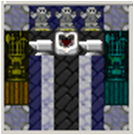
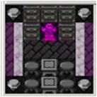
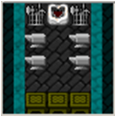
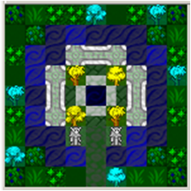

Quicklinks
::: Orcish Meadhall ::: Ancient Foundry ::: Fluidcaster (Magma Source) ::: Obsidian Spire Library ::: Heavy Weapons Foundry ::: Runesmith ::: Treesingers' Pagoda
Among these advanced workshops, only the Orcish Meadhall can be built using all domestic industries. The others require Blueprints which are rarely recovered by Raiders, when conducting overseas missions from the Raiders Drydock. If you don't get a chance to watch your Raiders unpack every loot box, then you can keep an eye out for available Blueprints and Codexs in your stocks>tools menu.
The greatest Orcish heros gather in such a hall to show off their great amassed wealth and trophies taken from fallen foes, and of course to boast about their personal exploits in battle. In this way Orc warriors share secrets with one another and learn advanced martial techniques. The first step is to form a warrior society, represented by a special reusable tool called a Codex. There are four societies which rely on tribal knowledge and domestic weapons, and you can create these Codexes at any time at the Meadhall. There are also Codexes which can be obtained rarely by Raiders, contain secrets stolen from the enemy, and may require rare or imported weapons.
An Orc then uses a codex, by combining two existing weapons to create a powerful "weapon" item that represents a dual-wield configuration. Many of these Society weapons cannot be used with shield, like the dual-katanas of the Blademasters' Society. Some can be used still with a shield, like the pistol and scimitar of the Seawolves' Society. Note, that the material used in the Society Weapons Loadout depends on the primary weapon in the kit (or the melee weapon if the primary weapon is ranged). Since the item is assembled by great warriors, not crafted by forgemasters, the quality depends on the primary weapon skill of the creator.
The Meadhall also contains the facilities to brew warriors' spiced meads, such as the rejuvenating Black Draught and the strength-giving Sharkey's Firewater (never mind the slight loss of fine motor skills!), and to craft special bloodsteel lupine masks that put fighters in the right frame of mind for combat. The Ulfzerker's mask promotes the fighting spirit and suppresses pain; the Opaque mask suppresses fear; and the Elite Clanguard's mask boosts the wearers kinesthetic sense.
The ancestors of Uruks, the steppe-tribes, were nomadic warriors... Masters of mail armor, axe, and blade, all crafted from the legendary alloy orichalcum. Orichalcum blades are sharper than the finest mithril, and armors proof against the strongest impacts. Legends tell that it was the perfect metal for rune-swords, because the blade itself would hunger for battle. Sadly the technique of crafting this extraordinary metal was lost when the great clan-strongholds were burned in the last age.
It is said that the Dwarves once knew a mystical formula of bronze, as dense as wolfram and harder than steel. Mechanical gears made of this Deep-bronze would seem to correct their own movement as if they know the mind of their creator, and the Dwarves of this bygone age made mechanical crossbows that could fire a bolt through a keyhole at a thousand paces. It is whispered that one of the most terrible curses enacted by the mad Dwarven blood god, Armok, was to erase the secrets of Deep-bronze from the minds of the forgemasters.
Legends and whispers are not normally your domain, as leading an orc-clan is an inherently practical function. But still: Your advisors claim that ancient ruins, not so very far from your clan-holding, hold a functional prototype of an ancient foundry -- older than the foundations of the ruined Black Citadel, and older than the roots of the deepest Mountainhomes. Can you afford the resources to indulge the Freelancers in this strange quest, likely no more than an archaeological curiosity?
Our outriders have been tracking a number of new dwarven settlements in the contested frontier. As you know, we track these settlements closely since dwarves are prone to maddeningly stupid behavior, and failed fortresses might as well be free loot. This settlement we're visiting today is the key one -- yes, warchief, it is on an aquifer. Yes, on a carp breeding ground, exactly. They might as well start crafting their own gabbro coffins? Yes, warchief, that's what we thought as well. What's more, they just drilled straight down into the aquifer like a addleheaded human child. Yes, warchief, it is madness.
There, on the edge of the, do you see this building? It has wheelbarrels of coal going in? Those are tankers coming out. Tankers? It is like a mine-cart, but see how it is full of water? Yes. Well, yesterday it was full of liquid fire. Many coal loads went in, and many tankers of liquid fire came out, and then the dwarves went back into the pit with their picks. Yes, I'm sure. Yes, two of them came running out with their beards on fire afterwards. Yes, warchief, it is madness.
...You are pretty sure that your scouts are not creative enough to spin this tall tale with no basis. But, is it really possible the dwarves have this technology?? If so, is it possible that the little bearded marvels are so stupid to deploy it for mining an aquifer in some third-rate provence forty league south of the middle of nowhere? If so, is it possible that this technology is portable enough to fit in a Freelancers' longboat?
It is a time-honored tradition among Orcish magic users: Spells are learned from Mojos, and Mojos are discovered randomly. Sometimes, mojos are granted in a flash of inspiration to dreamwalkers who perform spiritual rituals at the Places of Power. Sometimes, mysterious forces guide our brave raiders to find odd mojos here and there, in far corners of foreign lands. However it is whispered that some Drow researchers have mastered the art of crafting specific "scrolls" -- their profane foreign word for mojos -- on demand. Longstanding practice would demand that you hunt down and purge these heretics, raze their Obsidian Spire libraries to their scorched foundations, and cast any record of their blasphemous existence into the firey abyss.
 The humans are surprisingly tenacious survivors, despite their obvious frailty. First they invented plate armor to deflect our arrows and axes, but we learned to crush them by copying their pole-hammers. Next they invented guns which inflict cruel wounds to our warriors from afar, and overran many of our villages. In their arrogance, they forgot that these guns are small, and simple, and that we can easily enough buy or learn to craft them ourselves. Today, they lay siege to our fortresses with powerful siege weapons, steam-powered engines, and massive portable cannons. They forget that we will soon enough obtain the plans to these ultimate weapons as well, and their cowardly stone citadels will no longer protect them. Also, the human cannonballs aren't even filled with magma, which suggests that they might have ignored some other very obvious upgrades too.
Until today you have never understood the Free-peoples' obsession with writing and rune-letters. "Oh powerful warchief, please take this tribute and refrain from burning our humble library, it is only full of tide-tables and geological data." Pah. But this: a fine Dwarven steel axe, traced with inlaid letters of finely worked silver. You thought little of it at first, the sort of pointless frippery that a Thieves Guild caravaneer would pay a premium for. Until your warband was ambushed by a werewolf, and one of your guards grabbed this strange axe and cut the beast down in two quick strokes; the silver runes suddenly glowing with a curious internal light. A convert to the mysterious power of the written word, you make up your mind to take a return trip and destroy those tide-tables.
Our fathers' fathers stalked the ancestors of the elves in primeval forests, just as a jaguar stalks its prey. But we were too lenient to our foe, and the elves took us by surprise in developing the cultivation of ironbark and steeloak, and by inventing a process for separating mithril. Driven from our ancient hunting grounds and from the primal places of power, we have even been surpassed in skill at bowery and fletching. Of course, we have already recovered enough strength to protect our surviving clan-holdings, and our warchiefs today drive the elven assassins bloodied and humbled back to their Retreats. But in order to truly settle the scales, to finally raze their strongholds and hidden vales to ash, we need to master the same secret arts, twisting the forest to obey our will.